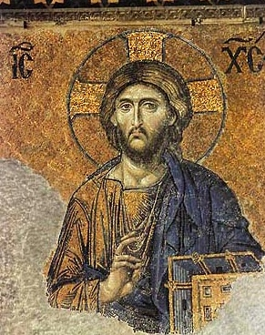

Sacred Texts Christianity
Buy this Book on Kindle
|  | Hymns of the Eastern Churchby J.M. Neale[1884] |
This is a collection of translations of hymns from the Eastern Orthodox church, most written during the height of the Byzantine Empire. Neale includes extensive introductory material and biographies of each hymn writer (most of whom have names beginning with 'S.'--'Saint'). This work includes some text in Greek, so your browser will have to have good Unicode support.
Second Epoch
Euthymius
Advertisements